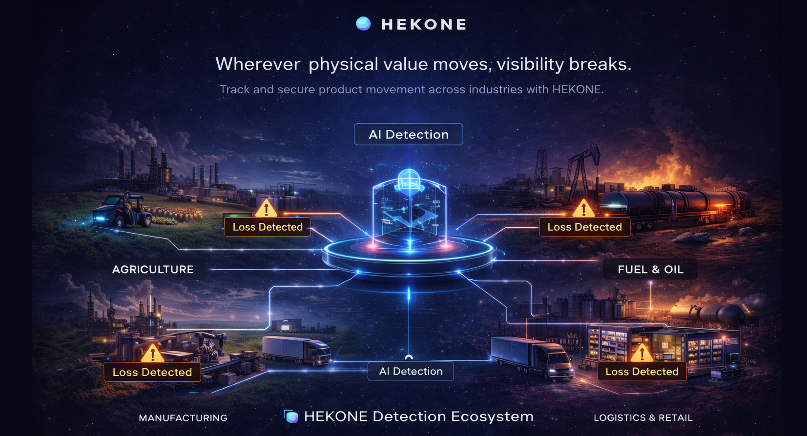

Make the invisible measurable.
Turn hidden operational loss into measurable, actionable signals — at the exact points where it actually happens.
Wherever physical value moves, visibility breaks.

Cross-industry infrastructure
A physical intelligence layer across industries — wherever real-world value moves.
Track where value is lost
Identify where value is delayed, degraded, stolen, leaked, or unaccounted across fragmented operations.
Built for platform scale
Start with one critical point — expand into a scalable operational data layer across sites and workflows.
The timing for this platform is becoming real.
Physical operations remain under-measured, while AI and existing systems still lack ground-truth signals from the real world.
Physical operations remain under-measured
Critical workflows still rely on fragmented visibility across handoffs, movement, and execution.
AI still lacks ground-truth signals
AI can only optimize what is actually captured at the physical event — not what is reconstructed later.
Loss happens before systems can react
Most systems surface problems after the fact, once leakage, drift, or mismatch has already created damage.
A $112B problem hiding in plain sight.
Fragmented systems miss what actually happens on the ground — creating avoidable loss and weak control.

Blind spots
Critical handoff points across factory, warehouse, transport, store, and shelf often operate without direct measurable visibility.
Mismatch & leakage
Inventory, shrink, dispensing, and execution inconsistencies create gaps between records and reality.
Delayed decisions
By the time loss appears in reports, the opportunity to intervene early is often already gone.
Grounded, focused deployment — not heavy infrastructure.
Start small at critical physical points where visibility actually matters.
Where HEKONE sees what others don’t
From factory to distribution, store, and shelf — HEKONE detects issues across critical handoff points.

From blind operations to measurable control
HEKONE transforms fragmented, reactive systems into structured operational intelligence.

A physical intelligence layer for real-world operations.
Turn physical events into structured, decision-ready signals.
Instrument critical points
Deploy only where measurement creates real operational value.
Generate structured intelligence
Convert physical events into actionable signals.
Scale from pilot to platform
Start focused. Expand across operations.
Where HEKONE creates immediate value
Environments where small visibility gaps create large operational consequences.
Retail shrink visibility
Detect loss patterns and hidden exceptions at the store level.
Warehouse accountability
Track inconsistencies across receiving, storage, and outbound handoffs.
Manufacturing control
Detect process drift before it becomes cost, waste, or rework.
Supply chain traceability
Track product flow across fragmented handoffs from origin to endpoint.
Why HEKONE
Traditional systems stop at digital reporting. HEKONE captures operational truth closer to the physical event itself.
Built for practical deployment
Start focused, prove value quickly, and expand where measurement improves control.
HEKONE is designed as a control-grade intelligence layer for real-world operations.
Validate value without heavy infrastructure.
Measure only where it matters most.
Sensing and software working together as one control layer.
Grow from one use case into a broader operational platform.
Start a pilot. See what your operations are missing.
We are exploring pilot, partner, and strategic collaboration opportunities with selected operators and technical teams that want measurable visibility into real-world operations.